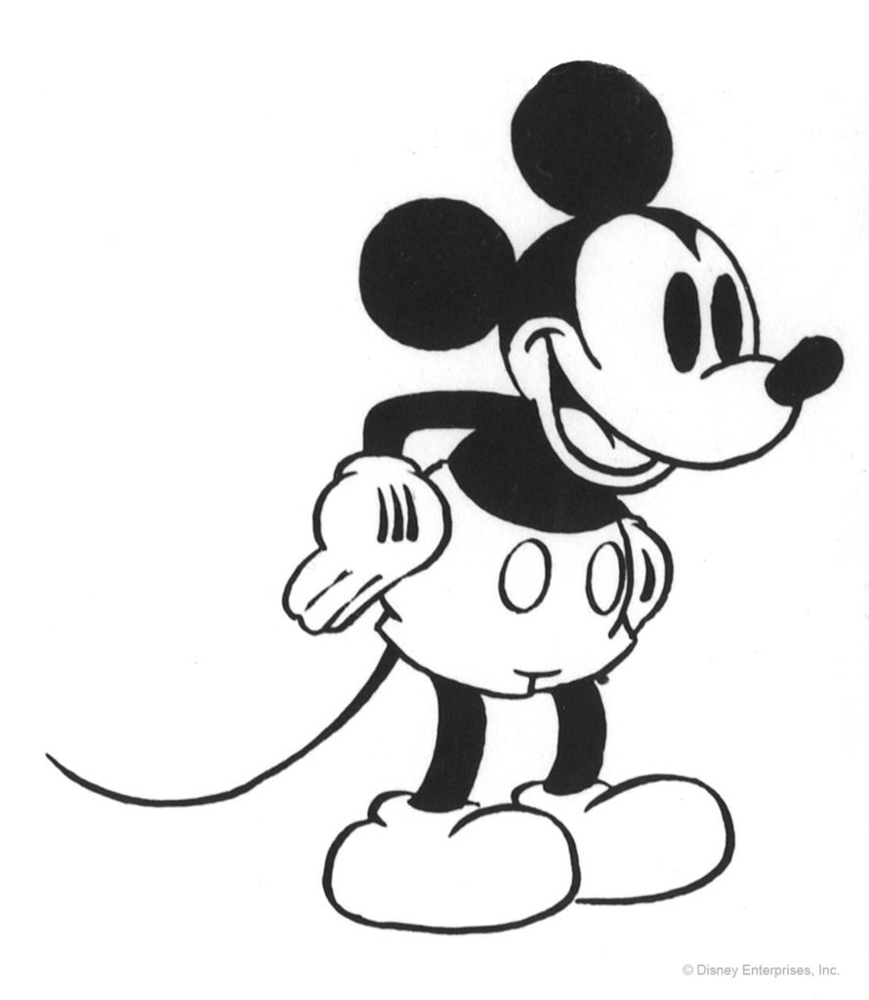
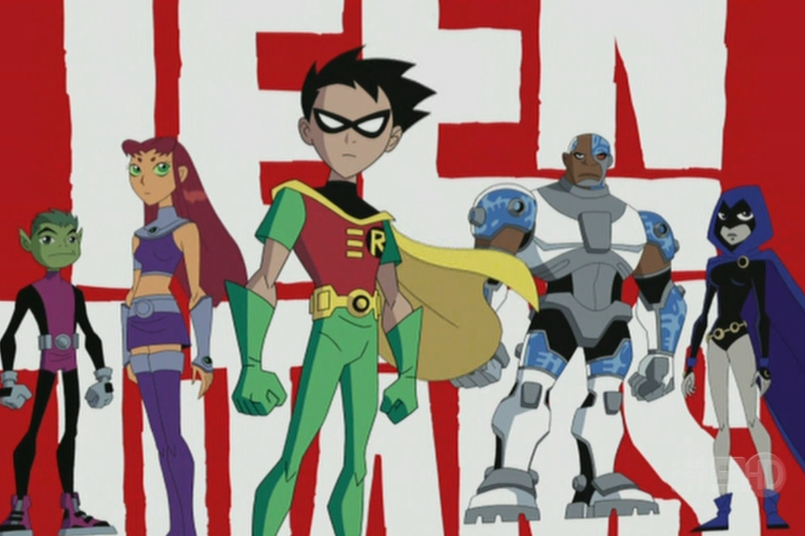

Cartoons
What are cartoons and how did they evolve over time?
A cartoon is "a simple drawing showing the features of its subjects in a humorously exaggerated way, especially a satirical one in a newspaper or magazine". cartoons are just animated artwork and could hold any type of meaning. One of the first cartoons created was "Fantasmagorie" It showed a character seeing objects morphing into eachother and other strange encounters. While that was made in 1908 so much has come out since.
Fantasmagorie
Below are different cartoons and how they have changed during the years*HOVER*
 

As shown you can see how much they have changed throughout years. It seems like the creators wanted it to be more kid friendly and welcoming with their different characteristics like their big eyes and large head. Another thing you can notice is how they changed the art style and how they improved it in ways, mikeymouse was only black and white and later on they added color and shading etc. In Fantasmagorie it was only black and white and the characters werent as detailed so its cool to see how everything has changed.